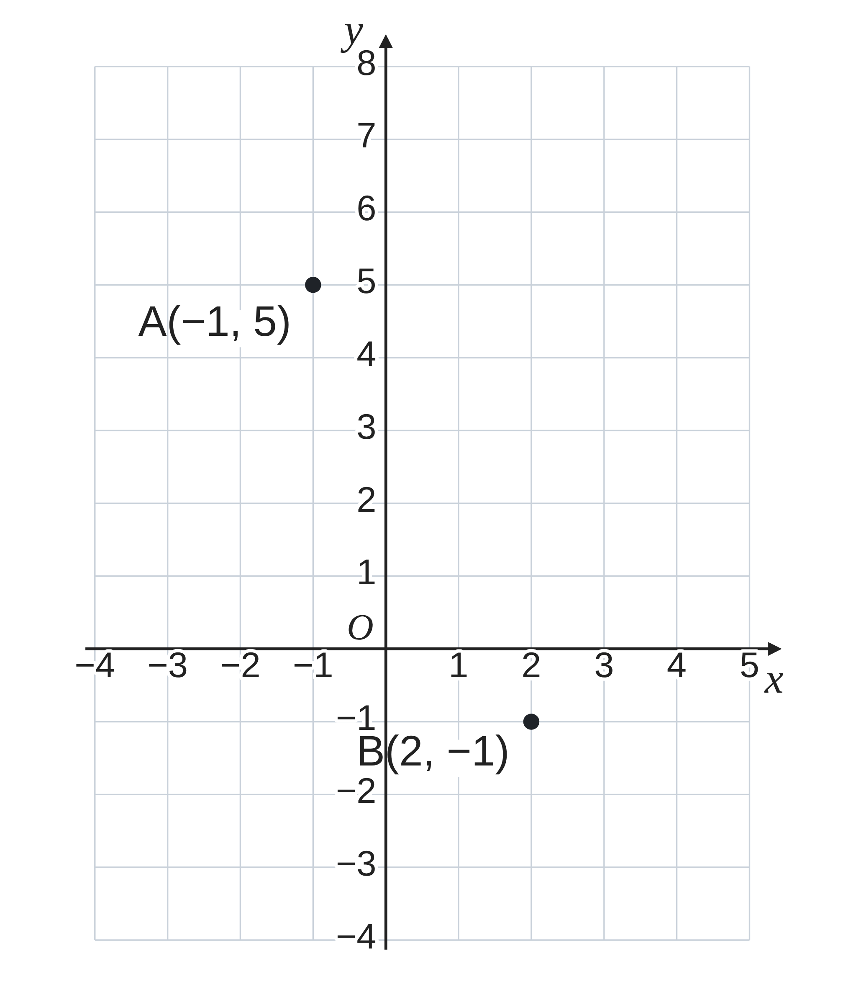
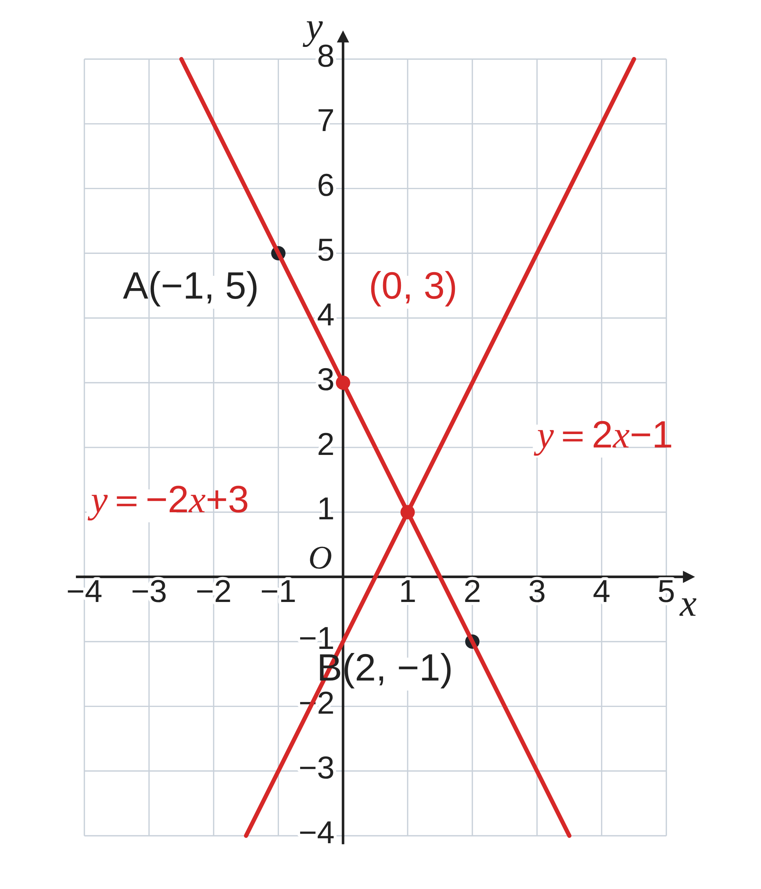

ペア学習
第17時 「一次関数」で学んだことを、整理して確かめよう
第16時の重要語句から、1人1問ずつ、言葉を選んで出題する。
聞かれた人は、その言葉の意味を、自分の言葉で言う。
底辺・高さ
場合を分ける
変域
一次関数 第17時 「一次関数」で学んだことを、整理して確かめよう
めあて
第17時 「一次関数」で学んだことを、整理して確かめよう
学習課題
直線 ℓ は、A(−1, 5)、B(2, −1) を通る。
（1）ℓ の式を求めよう。
（2）ℓ を、右の図にかこう。

一次関数 第17時 「一次関数」で学んだことを、整理して確かめよう
学習課題のまとめ
第17時 「一次関数」で学んだことを、整理して確かめよう
直線 ℓ は、A(−1, 5)、B(2, −1) を通る。（1）式 （2）グラフ
（1）
傾き＝(−1−5)⁄(2−(−1))＝−2
5＝−2×(−1)+b b＝3
y＝−2x+3
（2）
(0, 3) をとる
傾き −2 で (1, 1)、(2, −1)
2点を通る直線をひく
（確かめ）−2×2+3＝−1 ○
一次関数 第17時 「一次関数」で学んだことを、整理して確かめよう
ことば
第17時 「一次関数」で学んだことを、整理して確かめよう
①
一次関数 y＝ax+b では、
変化の割合は で、 に等しい。
②
グラフは で、a を 、b を という。
③
式は、傾きと通る 1点、または通る から求める。
④
2直線の の座標が、連立方程式の解である。
⑤
点がほぼ一直線上にならぶとき、
一次関数と ことができる。
一次関数 第17時 「一次関数」で学んだことを、整理して確かめよう
ことば
第17時 「一次関数」で学んだことを、整理して確かめよう
①
一次関数 y＝ax+b では、
変化の割合は一定で、aに等しい。
②
グラフは直線で、a を傾き、b を切片という。
③
式は、傾きと通る 1点、または通る2点から求める。
④
2直線の交点の座標が、連立方程式の解である。
⑤
点がほぼ一直線上にならぶとき、
一次関数とみなすことができる。
一次関数 第17時 「一次関数」で学んだことを、整理して確かめよう
例題
第17時 「一次関数」で学んだことを、整理して確かめよう
直線 m：y＝ x− がある。
（1）m を、右の図にかこう。
（2）ℓ と m の交点の座標を、式で求めよう。
学習課題で求めた式
ℓ：y＝−2x+3
一次関数 第17時 「一次関数」で学んだことを、整理して確かめよう
例題 解答
第17時 「一次関数」で学んだことを、整理して確かめよう
（1）
(0, −1)、(1, 1) を通る直線
（2）
2x−1＝−2x+3 4x＝4 x＝1
y＝2×1−1＝1
交点は (1, 1)
確かめ −2×1+3＝1 2×1−1＝1 ○

一次関数 第17時 「一次関数」で学んだことを、整理して確かめよう
考えよう
第17時 「一次関数」で学んだことを、整理して確かめよう
ア 一次関数 y＝−2x+8 のグラフは、x が増えると y も増えるから、右上がりの直線である。
イ 一次関数 y＝−3x+1 で、x の変域が −1≦x≦2 のとき、x＝−1 で y＝4、x＝2 で y＝−5 だから、y の変域は 4≦y≦−5 である。
ウ 2点 (1, 5)、(3, 11) を通る直線の式を、傾き (11−5)⁄(3−1)＝3 と、5＝3×1+b から b＝2 として、y＝3x+2 とした。
エ 2直線 y＝x+1、y＝−2x+7 の交点を、x+1＝−2x+7 を解いて x＝2 とし、交点の座標は 2 と答えた。
① ア〜エを読んで、一次関数で、まちがえないために大切にしたいことを、まとめよう。
② 一次関数の問題を解くとき、表・式・グラフのどれを使うと、考えやすかったか。
1つ選んで、わけを説明しよう。
一次関数 第17時 「一次関数」で学んだことを、整理して確かめよう
振り返り
第17時 「一次関数」で学んだことを、整理して確かめよう
今日のめあて
一次関数
変化の割合
傾き・切片
変域
交点
今日わかったことを、ペアで1つずつ言い合おう。
ワークシートと演習プリントを出そう。（未完成でも出す）
一次関数 第17時 「一次関数」で学んだことを、整理して確かめよう